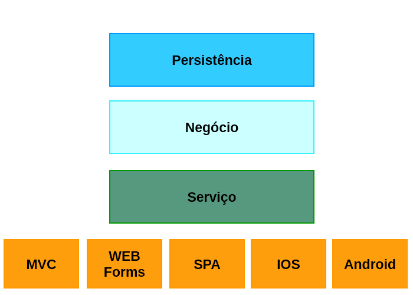
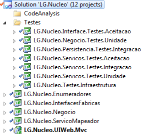
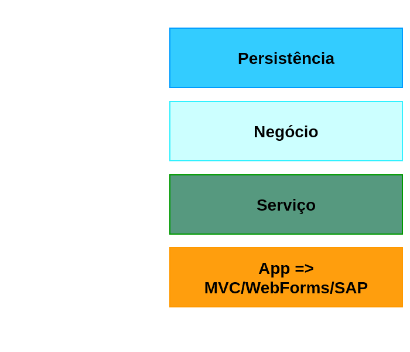
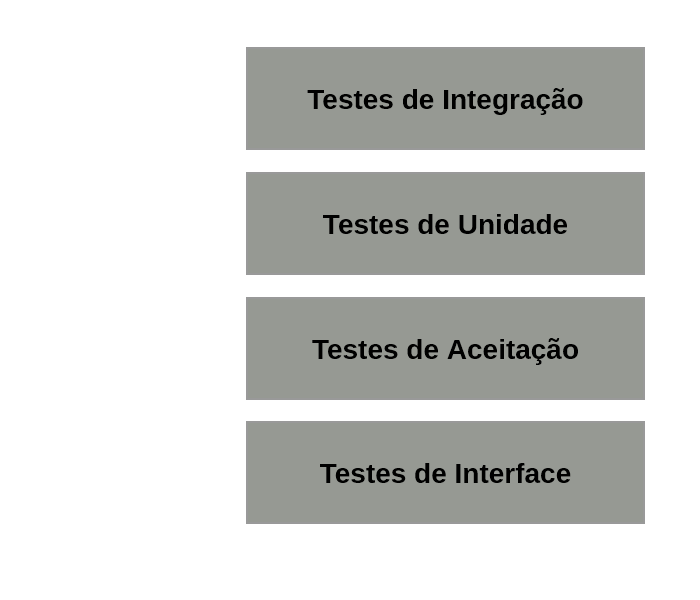
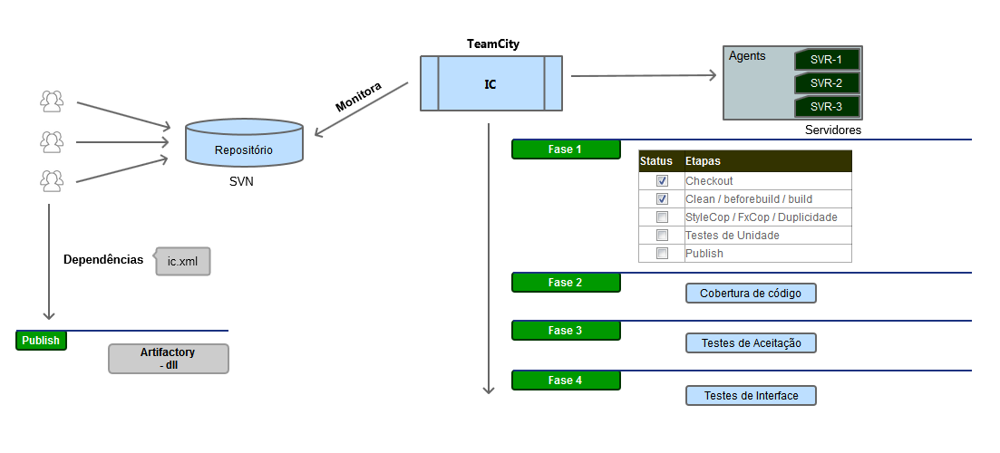
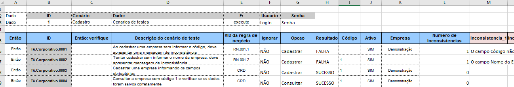
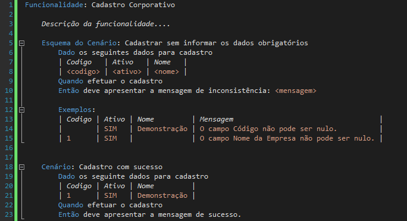

Automação de Testes de Software
Testes de aceitação e interface
Por Willyam Almeida
Esboço - agenda
-
Revisão geral
- Estrutura de projeto NG
- Apresentar os tipos de testes utilizado, escopo, responsabilidade, ...
- Demonstração sucinta de cada um deles na NG
- Scripts de automação com powershell
- Cobertura de código e complexidade ciclomática
- StyleCop e FxCop
-
Testes de Aceitação
- Introdução
- Ferramentas
- Infraestrutura
- Banco de dados (preparação / versionamento)
- Ambiente de execução (local/TeamCity)
- Projeto piloto
Esboço - agenda
-
Testes de Interface
- Introdução
- Frameworks utilizados
- Elaboração dos testes
- Screenshot e comparação de imagens
- Padrão Page Object
- Ambiente de execução (local/TeamCity)
- Projeto piloto
- Dicas, boas práticas, procedimentos e pontos de atenção
Agenda
-
Visão geral
- Estrutura de projeto NG
- Tipos de testes e responsabilidades
- IC - Integração Contínua
- Demonstração
- Testes de Aceitação
- Testes de Interface
Antes de mais nada...
Estrutura de projeto NG
Tipos de testes


Fluxo de IC
Testes de Aceitação
Testes de Aceitação na NG
"é um tipo de testes de integração na camada de serviço"
"com foco nas regras de negócio"
Como representar um cadastro...

Usando planilha Excel...
Outras formas...
Ferramentas

Links
Leitura da planilha: AccessDatabaseEngine Framework de testes: NUnit xUnit MSTest ...
Testes de Interface
Considerações...
Dicas
Boas práticas
Procedimentos
Pontos de atenção
End...